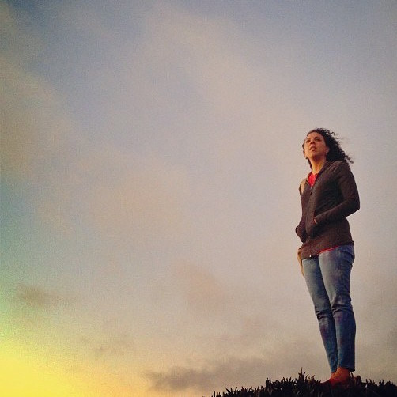

About Me
I... wear things like leggings though harper's says i shouldn't, call my puppy nugget when her name is bella bean, have multiple pairs of patent leather shoes and have worn out my yellow ones as i prefer them, drink kombucha, sing with the band, sing without the band, sing in my car and shower and room with brush in hand, think the lead singer of augustana took a hot picture this one time, have goals for this year and one is to pray for you, wait patiently, wait impatiently, don't wait at all, love completely, laugh loudly, believe that real tans like real love should never fade, desire to be involved in something majestic, dislike it when people clap after movies [because the cast can't hear them], know it's a bad day if a plastic bottle is not recycled, buy cheap purses and even cheaper sunglasses, smile with my eyes [when not rolling them...], really don't like the cheesecake factory, can't get enough of the color orange, miss carolina and all it entails, miss you, entertain thoughts of grandeur, care for people, fall into road rage, feel bad, hit my steering wheel, cook from scratch, forget to call, hate myself in the morning, forget to email, apologize, try my hardest to learn for the past, hold pockets, adore worship, am way too into stage shows and their accompanying soundtracks for my own good, could sit in the MET or chicago institute of art or prado for hours and never get bored staring at the walls, have a map staring at me when i awake in the morning and all day at work, heart jason castro, am in love with the only Father i've ever known and the family He blessed me with [albeit small], rarely overpack, bruise easily, want to be a race car and big rig driver when i grow up, invest in expensive clothing some of the time [clothing in general all of the time], tell long stories, am sorry, keep talking because a detail was missed, travel, purchase high heels because it just feels right, read, find myself hard to handle at times, write, enjoy a bit of insecurity, dance whenever music involved, want to live in my rainbows, make mistakes [sometimes drastic ones], and [after all is said and done] want to be described as only one thing: life-giving....
You can email me here or find me on Twitter .
